-
- Basic info. 基本信息
- 个人信息: 谢虹宇 / 女
- 毕业院校: 东北大学(2010-2014)
- 院校性质: 985、211(统招)
- 主修专业: 计算机科学与技术
- 业余爱好: 科幻电影,推理电影,Geek盛会,球类运动
- GitHub个人仓库: github.com/hongyuXie
- GitHub技术博客: hongyuxie.github.io/
- CSDN技术博客: blog.csdn.net/loverain90
-
- Snapshot. 个人工作快照
 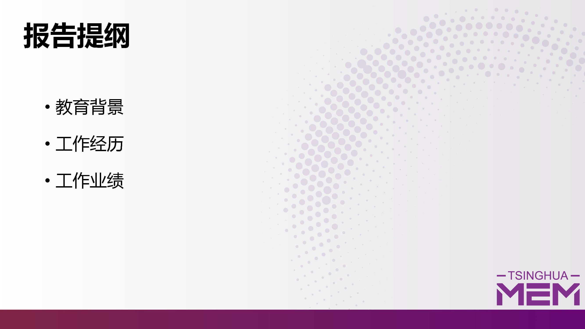
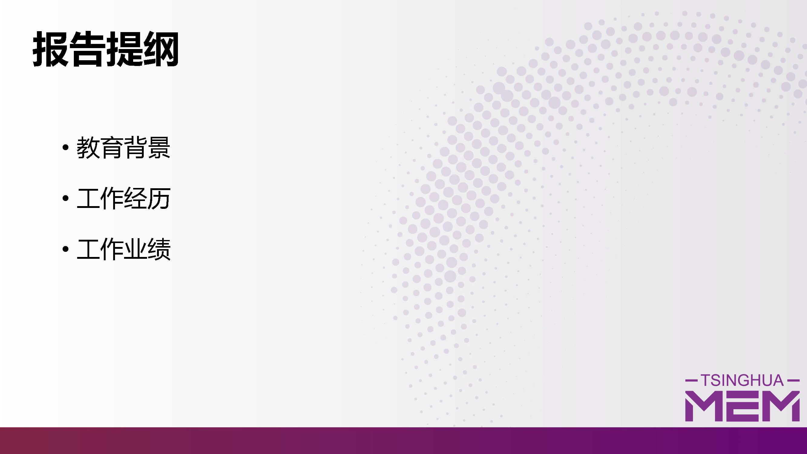

 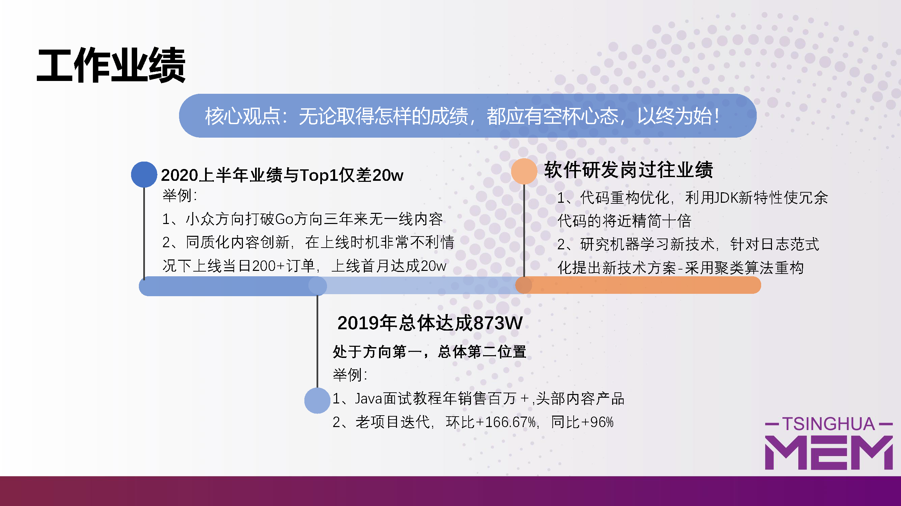
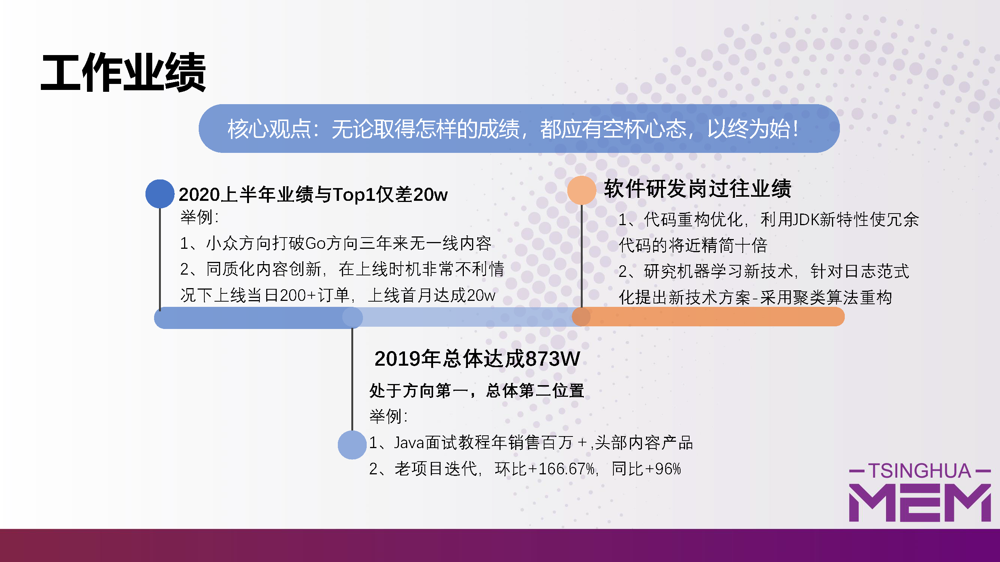
-
- Experience. 个人工作与项目详情
 北京臻迪智能技术有限公司(2021.1~至今）
北京臻迪智能技术有限公司(2021.1~至今）-
核心工作：软件项目经理
介绍：
（0）四旋翼无人机软件系统项目管理：70+，按照项目管理的十大知识领域和五大过程组的纲领主导工作开展。 （1）电动水上冲浪板软件项目管理：15+，为配合市场运营以及实现公司战略目标，交付租赁运营软件工具（涉及控制软件、体感遥控器、APP、运营系统、CRM等）。 （2）跨部门沟通协调（涉及与市场、产品、研发、生产、工程、质量等各部门），制定项目管理计划，推进项目交付。
 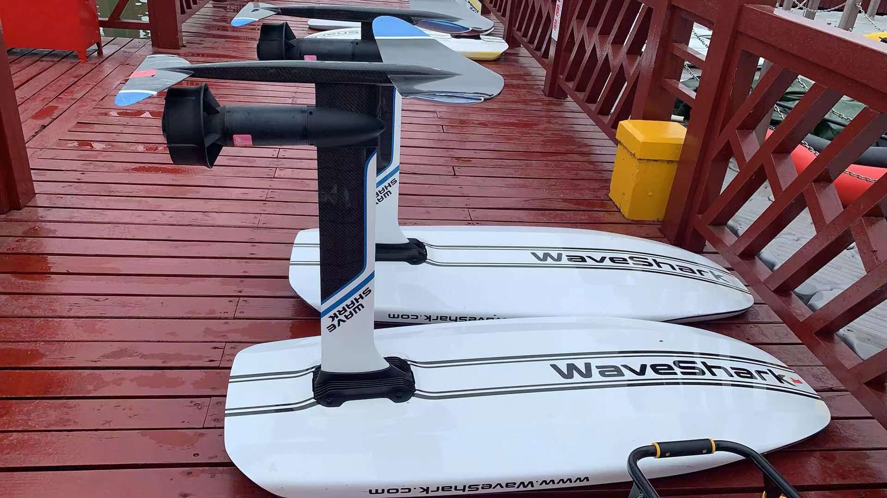
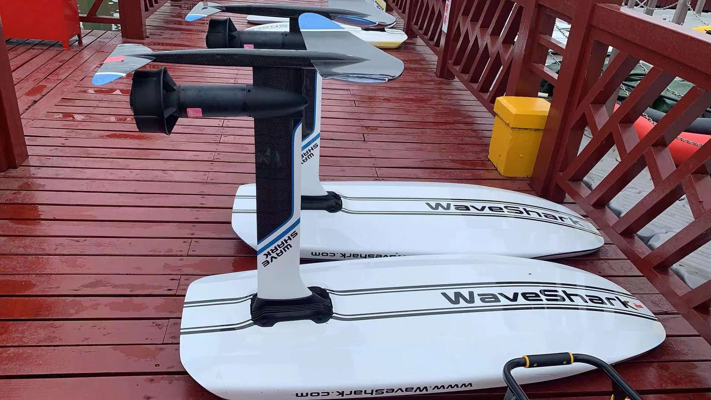
 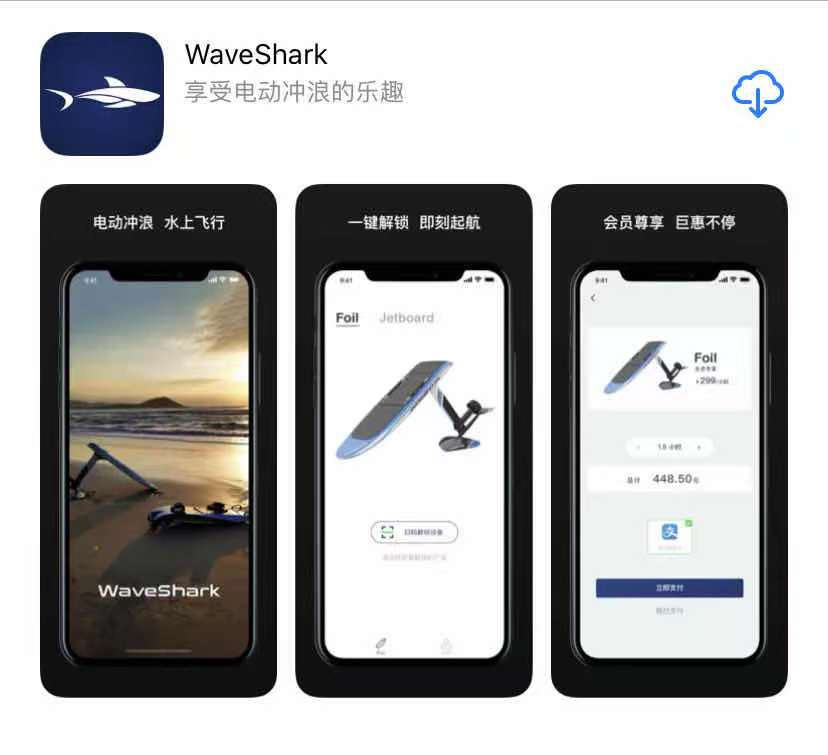
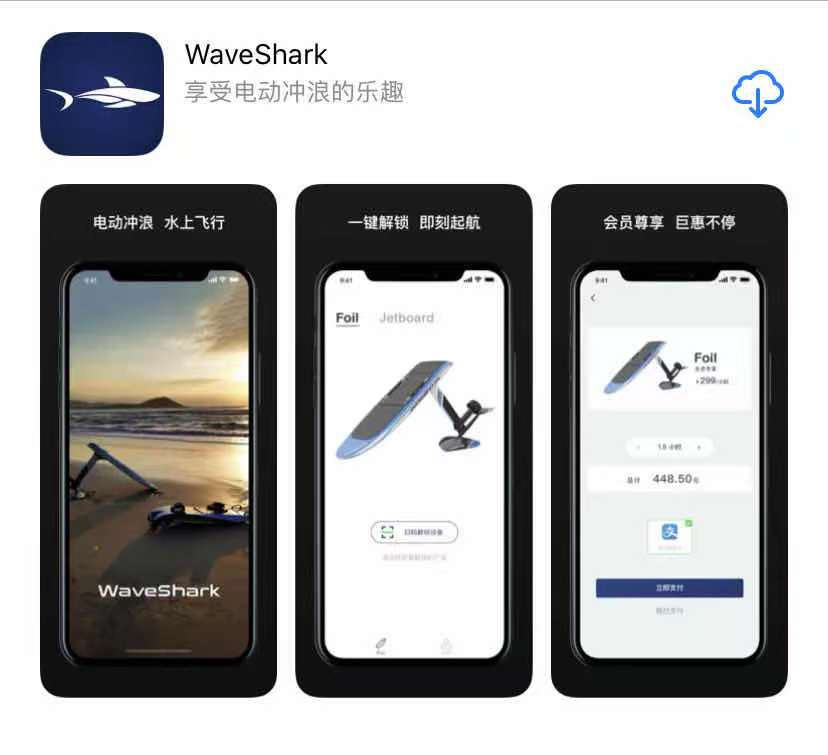

-
业绩：
入职半年从接受公司战略项目-无人机项目-让"蛋"飞起来，到临危受命-管理”御剑飞行“水翼冲浪板Foil的运营项目，从市场/运营需求导入，到快速沟通整合各部门资源（市场、产品、研发各组、测试、工程、生产等），到通过”项目进度管理“，最终，各软软模块交付市场：嵌入式控制软件、APP（IOS+Android）、运营H5端、CRM、历时仅31工作日，完成MVP交付，交付运营，受到公司各领导和CEO的称赞，该项目将成为公司最具增长潜力、具有网红爆款运动特性的项目，可遇见的是：不久的将来将成为公司最具增长潜能的项目。。
 奥鹏教育集团-慕课网（2018.11 - 2020.12）
奥鹏教育集团-慕课网（2018.11 - 2020.12）-
核心工作：项目经理（内容付费)
介绍： （0）内容团队核心成员：35+，按照项目管理的十大知识领域和五大过程组的纲领主导工作开展。 （1）设计与规划知识付费课程等产品或项目，方向涵盖：Java、大数据、数据库、GO等IT垂直内容方向。 （2）跨部门沟通协调（涉及与商务、产品、文案、研发等各部门），推进付费内容产品或项目以最低的风险，0故障上线，以及上线后续配合运营部门进行内容产品运营转化，做好用户服务。
主要负责：
（0）内容团队的：目标管理、流程化管理、有效管理、期望管理、沟通管理等方面。 （1）项目启动阶段：内容/项目产品创意的产生，进行市场调研，商业论证，确定付费内容是否符合技术市场需求，是否具有商业效益。 （2）项目规划阶段：商业论证通过后，与商务部门沟通发起人员需求，与内容创作团队（供应商）进行设计付费内容大纲，以及进度节点规划等。 （3）项目执行阶段：执行过程，主要是内容/项目的PPT、思维导图、代码等教辅资料落地，以及完成视频内容录制。 （4）项目监控阶段：运用项目管理工具管理和监控项目质量、进度、风险、成本等项目各维度监控。如：进度管理工具甘特图监控进度，运用《风险登记册》监控风险等。 （5）项目收尾阶段：与文案策划部门确定营销文案、与运营推广部门确定推广方案方案、与产品和研发部门沟通确保无故障上线，上线后与运营部门确保产品运营，确保用户服务质量。
-
成功项目一：
《剑指Java面试-Offer直通车》针对大学生群体如何在临近毕业，答辩紧张情况下，以及职场人士如何在996情况下，高效准备面试。
业绩：创造上线10日内实现15万+销售，成为经久不衰的年销售百万+的头部流量内容。 -
成功项目二：
《Go微服务网关设计与实战》针对小众中高端市场，设计以Go为主语言，微服务网关等底层技术为内容核心，以实战为向导的微服务网关设计与实现为主体的内容付费产品/项目。
业绩：创造小众方向三年来0一线内容的局面，开启Go语言方向新的篇章-成为《Go金职位体系课》发起人，在Go市场缺乏Go体系课情况下，成为第一个吃螃蟹的人。 -
项目集创新：
为了使上线已久的内容/项目产品，焕发新的销售活力，通过内容创新，进行内容迭代升级，实现新的增长。
业绩：实现环比增长+166.67%、同比增长+96%


 去哪儿网（2017.11 - 2018.11）
去哪儿网（2017.11 - 2018.11）-
机票-团票通各相关业务系统
介绍：团票通营销活动渠道购买的机票及保险，涉及search、booking、生单、支付、退款各流程涉及的三十多个业务子系统功能。
负责：1、完成保险信息的生单与订单详情查询部分；采用模板模式封装各个险种的生单流程，使得险种易于扩展， 使用工厂方法模式封装各个险种的生单Bean，业务层只需要持有工厂Bean的引用，根据险种类型获取具体的险种生单Bean；机票单生单 不保险单生单采用同步方式，机票单生单成功后再生保险单，保险单生单失败机票单按丌搭售保险逻辑正常走支付流程。 2、根据系统的监控，对原有search逻辑的维护、线上bug以及故障修复。
-
机票-收益相关业务系统
介绍：机票收益相关业务系统，根据内置的一些指令实时获取包机相关客座率等相关信息，进行自动的调舱，如：升舱、 降舱、补仓等，从而实现包机业务的最大收益。同时开发相关图表功能，直观查看收益相关信息，如客座率、日上客差值、竞比环比、收入等。


Java Web相关【开始】 启明星辰（2015.11 -2017.11）
启明星辰（2015.11 -2017.11）-
产品研发-日志采集系统
介绍：针对不同的应用通过授权，能够采用不同的采集方式， 同时，对已部署的系统，应该能够不断的添加新开发出来的采集方式， 因此插件模式也就应运而生。 在采集器(模块)中，每一种采集方式都被定义为一个插件， 这个插件在自己的代码控件中实现本身特有的采集功能， 并自己控制插件配置的保存和读取。
负责：各采集插件服务的研发工作，目前实现的主要的采集插件有:apache、iis、 jdbc(区分不同数据库类型，主要有oracle;sqlserver;mysql;db2等)、mysql、 oracle、mysql、textfile、textfilepath等。
技术栈：quartz框架，实时多线程任务调度；nutz框架


-
产品研发-日志审计系统
介绍：系统总13个一级模块，若干二三级模块。系统能实时采集企业和组织中各种不同厂商的安全设备、 网络设备、主机、操作系统、以及各种应用系统产生的日志、事件、报警等信息，并将数据信息汇集到审计中心，进行集中存储、 展现、查询和审计。产品解决安全行业中：各种安全产品及设备的日志数据通常杂乱无序，同时也无法体现它们之间的相互关系。 因此日志审计系统就是为解决这些问题建立起一个信息交换、信息存储、信息处理的平台，通过该平台，可以对各类产品的日志、 事件进行统一管理、分析。
负责：目前主要是规则、审计、告警三个一级模块的研发和维护等工作。其中，规则指的是审计的前提，告警 是审计的结果。此三个模块是日志审计的核心所在。规则作为最基础的部件，规则配置的条件面板采用了插件式的设计。实时采集的 syslog日志通过某种机制从采集器转发过来后，通过日志范式化后形成可读性较高的结构化数据，即：事件，针对匹配规则的某些事 件便会产生告警通知客户，是否进行处理。
技术栈：
前端栈：Jquery；统计分析图表展示框架：echarts。 后端栈：elasticsearch用于快速检索，kibana用于分析展示，nutz框架等
软技能：
原型设计：Axure RP Pro 7.0 设计文档：Word2010;Visio2010;Project2010 分析工具：思维导图Mindjet 进度规划：甘特图


-
产品研发-分布式关联分析系统
介绍：关联分析中心建设思路旨在南方电网项目中独立出关联分析中心，从而减轻系 对CPU的消耗，提升产品运行速度。关联分析中心是未来承载TSOC安全管理平台的事件规则告警的分析中心， 实现事件分析独立分布式的处理建设目标。
负责：完成的主要功能有TMS消息服务(即：RPC服务)。TMS目前 支持两种传输方式：MessageClient和RemoteClient，可以按照实际需要选择合适的传输类型。MessageClient： 支持点对点单向传输，由客户端发送到服务器，传输数据支持缓存，能够实现断点续传。 RemoteClient： 支持多点双向传输，由客户端发送到服务器，服务器可以返回数据，也可以不返回，直接作为单向传输，但 是都不支持缓存，无法实现断点续传。
技术栈：
（0）TMS:即传统意义上的RPC，TMS目前是公司自己基于github上开源的Kryonet封装的一套类似于RPC框架(类似于：dubbo、netty等RPC框架); （1）Kryonet：它是一个Java库，它为高效的TCP和UDP客户端/服务器网络通信提供了一个干净简单的API，使用NIO;KryoNet使用Kryo串行化库自动和有效地将对象图传输到整个网络;Kryonet围绕着RPC的核心来实现，主要包含：服务端启动服务、连接客户端、注册类、协议TCP/UDP、缓冲大小、线程、LAN 服务发现、可插拔的序列化、RMI （2）消息服务中间件：Kafka、RocketMQ、Redis等【尚在选型】;数据转发器

-
产品研发-SOC安全管理系统
介绍：全面管理，综合分析平台。SOC安全管理系统以 IT 资产为基础，以业务信息系统为核心， 以用户体验为指引，从监控、审计、风险、运维四个维度建立一套可度量的统一业务支撑平台，使得各种用户能够对业 务信息系统进行可用性、性能与服务水平监控，事件分析、审计、预警与响应、风险及态势的度量与评估，标准化、例 行化、常态化的安全流程管控，从而最终实现业务信息系统的持续安全运营。
负责：威胁情报功能开发，以及采用elasticsearch默认支持的脚本groovy进行威胁情报的配置，匹配查询等。
技术栈：基本同上-->产品研发-日志审计系统；新增groovy实现威胁情报脚本匹配查询。
软技能：完全同上-->产品研发-日志审计系统

-
产品研发-通用产品打包虚拟机研发
介绍：打包，万里长征的最后一步，如何把系统部署到测试人员或最终用户的机器上？为了便捷快速的实现部署到 相关服务器上，我们需要形成一个产品包。这就需要一个便捷的工具，实现产品源码的编译，打包，针对不同操作系统，如linux是一个 tar包，而windows是一个exe的可执行安装包。
负责:
1、针对windows系统： （0）自动化代码编译、打包的shell脚本实现； （1）采用innosetup进行压制成exe，通过iss脚本实现； （2）iss脚本和bat脚本做安装接口：针对安装包安装，需启动各类服务，如：tomcat，es，db,java等服务； （3）iss脚本和bat脚本做卸载接口：针对安装包卸载，需清空安装目录； （4）iss脚本和bat脚本做elasticsearch服务内存分配接口，根据es官网给出的建议es内存分配机制进行合理的分配jvm内存。
2、针对linux系统： （0）同上； （1）不需要第三方工具压制，直接调用linux系统的tar -czvf命令；
技术栈： linux、shell、innosetup(iss)、bat、ssh
 航天宏图（2013.6 - 2015.11）
航天宏图（2013.6 - 2015.11）-
定制项目-航遥中心数据分发系统
介绍：
（0）数据查询检索：实现用户对遥感影像产品、专题产品及其它相关数据检索 （1）服务门户模块：在此系统提供了新闻发布功能、产品介绍功能、工具下载功能、信息共享功能 （2）订单管理：用来实现用户对已有订单、再加工订单、数据需求单、常规需求单的管理，包括订单查询、订单状态跟踪与统计分析、订单内容修改删除、订单取消等功能 （3）数据同步：同步基础数据支撑平台数据到信息共享与服务系统数据库；实现将内网经过筛选后的元数据和快视图数据同步到外网系统的功能；产品订单进行内网导出，可以为外网订单进行导入做好数据支撑
负责： 订单管理模块的开发与维护
技术栈：
DWR框架 统计分析图表展示框架：highcharts 后端栈： 基本环境：jdk1.6+tomcat6.0+oracle11g+Arcgis SSH框架
软技能： 需求文档编写 概要设计文档 功能界面原型设计：Axure RP Pro 7.0
-
定制项目-军工数据分发系统和应用调度系统
介绍： 项目包含5个子系统：
（0）资料存档管理子系统 （1）查询检索子系统 （2）产品分发子系统 （3）产品定制服务子系统 （4）应用调度子系统 负责： （0）产品分发子系统 （1）应用调度子系统
技术栈：同上-->定制项目-航遥中心数据分发系统
Java Web相关【结束】- Skill. 技能清单
-
总览


 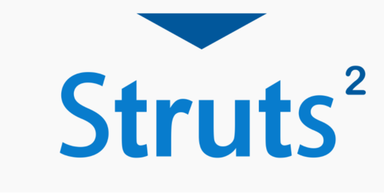
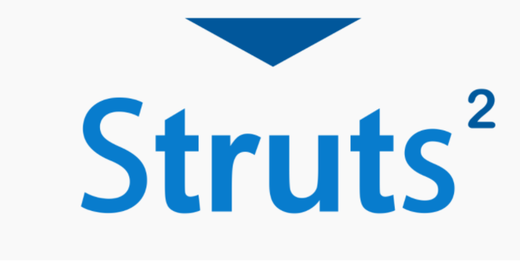


 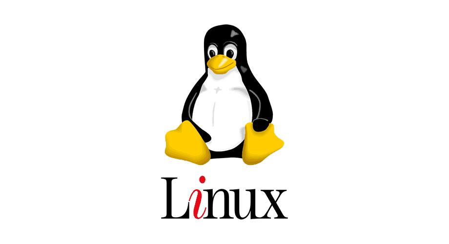
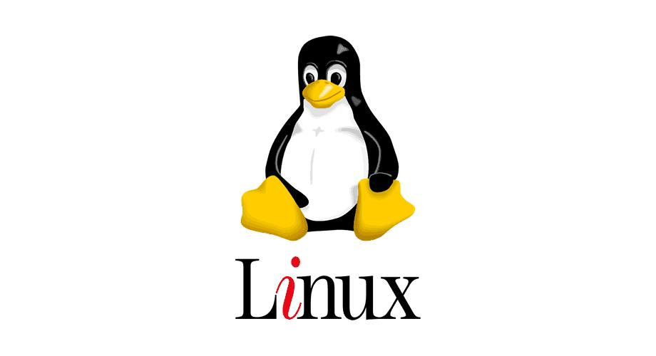
-
1、 Java基础扎实，深刻理解MVC思想 2、 深谙常用的数据结构,如：Collection、Map等，了解其适用场景，略读过部分常用数据结构JDK源码 3、 熟悉多线程并发下常用数据结构，对线程池框架略有研究，略读过并发包下常用的几种数据结构的JDK源码 4、 了解锁机制及其相关数据结构(synchronized、Lock、volatile、ThreadLocal)，熟悉其适用场景 5、 熟悉JVM相关知识：JVM类加载、JVM内存模型、Java GC机制等，并能通过工具查看JVM信息并根据信息进行代码的调优、JVM调优、及时排查与解决OOM和SOF问题 6、 熟悉Java的IO/NIO/AIO，能在开发过程中正确使用该数据结构进行文件读写操作 7、 熟悉Java的反射机制，在开发过程中能熟练使用反射机制对大对象的属性设置值 8、 熟悉RPC和Webservice技术，能根据不同场景采用这两种技术开发客户端、服务端通信的应用程序 9、 深刻理解设计模式的开闭原则(总纲)、单一职责原则等，了解并能在开发过程中使用常用的设计模式进行开发 10、熟悉Nutz框架开发(被认为是SSH框架的最佳替代) 11、在设计模式原则和读过的一些JDK源码指导下，对代码有洁癖，不能忍受不遵循设计原则和MVC三层设计的代码 12、熟悉常用的linux的命令，曾编写过产品安装时，elasticsearch的JVM内存分配的shell脚本 13、熟悉常用的windows CMD命令，曾编写过产品安装时，elasticsearch的JVM内存分配的bat脚本 14、了解iss(innosetup)脚本，曾编写过iss脚本与shell脚本的接口 15、时刻保持对前沿技术的热证，自学能力强，通过利用假日等空余时间，自学完成斯坦福大学吴恩达(Andrew Ng)教授讲授的机器学习课程，并取得相关资格认证
- Person Projects. 个人项目
-
个人博客-AI【目前仅有：机器学习MachineLearning】 源代码
简要介绍： 机器学习是一门研究在非特定编程条件下让计算机采取行动的学科。 最近二十年，机器学习为我们带来了自动驾驶汽车、实用的语音识别、 高效的网络搜索，让我们对人类基因的解读能力大大提高。当今机器 学习技术已经非常普遍，您很可能在毫无察觉情况下每天使用几十次。 本项目涵盖机器学习、数据挖掘和统计模式识别。相关主题包括： (i) 监督式学习（参数和非参数算法、支持向量机、核函数和神经网络）。 (ii) 无监督学习（集群、降维、推荐系统和深度学习）。 (iii) 机器学习实例（偏见/方差理论；机器学习和AI领域的创新）。 在不同领域应用学习算法，例如智能机器人（感知和控制）、文本理解（网络搜索和垃圾邮件过滤） 、计算机视觉、医学信息学、音频、数据库挖掘等领域。
资格证书：


涵盖内容:
Linear Regression 线性回归 Logistic Regression 逻辑回归 Neural Networks 神经网络 Support Vector Machines 支持向量机 K-means Clustering K-means聚类算法 Principal Components 主成分分析 Analysis 分析 Anomaly Detection 异常检测 Collaborative Filtering 协同过滤 Object Recognition 模式/目标识别 Matlab 数学分析软件Matlab使用 Octave 数学分析软件Octave使用
最初的最初：是个人对人工智能领域的热爱；热爱各类科幻电影，并认为只有想不到的，没有做不到的；科幻最终一定会走出银幕，成为现实。
后来的后来：与Andrew Ng的清华大学的一面之缘，从此埋下了一颗种子；后来，基于个人对Andrew Ng 的崇拜,当年还没毕业，参加百度在清华大学的招聘宣讲和笔试，和Andrew Ng有过一面之缘，从此特别关注人工智能领域。无意中，发现Andrew Ng原来曾创建过MOOC的平台，从此开始了自学机器学习的漫漫长路。
现在的现在：经过一年的坚持，终于修完Andrew Ng在Coursera的课程。
以后的以后：继续跟着Andrew Ng学习，Ng从百度离职以后，创办了deeplearning.ai致力于让全世界的人都能通过自学课程，成为AI领域的专家。

-
产品-日志自动范式化系统(预研)
介绍：Syslog是一种被广泛应用于日志系统的日志描述格式，SOC作为日志采集和分析系统， 需要从各种不同的系统和设备上采集并分析日志。但大多数系统并没有完全遵守syslog的格式标准，并且具有各种 自身系统所定义的日志格式。这使得SOC在对采集的日志进行解析和抽取所需要的字段（范式化）时，无法做到对所 有日志格式的兼容。目前的解决方案是采用人工编写正则表达式的方法来对不同系统和设备的日志格式进行适配。该 方法存在有一定的弊端，当用户环境中的产生日志的设备因为版本升级日志格式发生调整或者增加了新的未识别过的 设备后，都会使得SOC当前的正则表达式对日志的解析功能失效，这时就需要前线技术人员现场增加可以解析新的日志 格式的正则表达式，但是，由于前线技术人员个人技术的差别加上对SOC所定义的字段和用户日志的理解的不同，会使 得写出的正则表达式错误较多且解析不准确，因此需要设计一种能够在不需要人工干预或者少量人工干预的情况下，完 成对未识别过的日志格式进行自动解析和识别的方法，来增加SOC对不同日志的兼容性和适配能力。
负责：
（0）机器学习的研究 （1）方案预研究
-
个人简历
- GitHub项目地址:MyResume_CN.git
- GitHub访问地址:MyResume_CN
介绍： 这是个人的中文在线简历，为了实时更新个人的经历，一劳永逸，特别将此简历做成在线的。后期会在github上新开一个分支，做中英文简历。欢迎star。
机器学习相关【开始】机器学习相关【结束】其他项目【开始】其他项目【结束】

谢虹宇的简历
(゜-゜)つロ 干杯~
-
- Contact. 联系方式
- 电话: 156-0051-0487;156-01042995
- 邮箱: 1990xhy@gmail.com
- 微信: xhy1990xhy
- QQ: 489632554
-
- Application. 应聘岗位
- 项目经理
船停在港湾固然安全，但这并不是船的初衷！